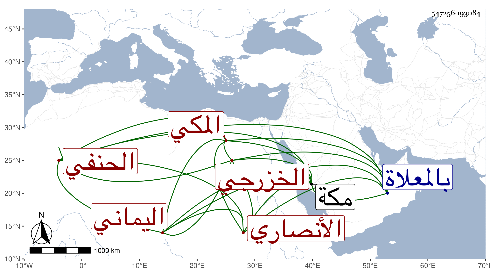

0902Sakhawi.DawLamic.ITO20230111-ara1.EIS1600.547256093084
Biography ID: 547256093084
1236
يوسف بن أبي القسم بن أحمد بن عبد الصمد الجمال أبو محمد الأنصاري الخزرجي اليماني المكي الحنفي ، سمع من الجمال الأميوطي والشمس بن سكر وأجاز له في سنة إحدى وسبعين الأذرعي والأسنائي ومحمد بن الحسن بن محمد بن عمار ابن قاضي الزبداني وأبو البقاء السبكي وأبو اليمن بن الكويك وابن القارئ والآمدي وآخرون . ذكره التقي بن فهد في معجمه وقال الفاسي أنه اشتغل بالفقه وكان له إلمام به بحيث يذاكر بمسائل مع نظم ودين وخير وتحر كثير في الشهادة . مات سنة ست وعشرين بمكة ودفن بالمعلاة .
